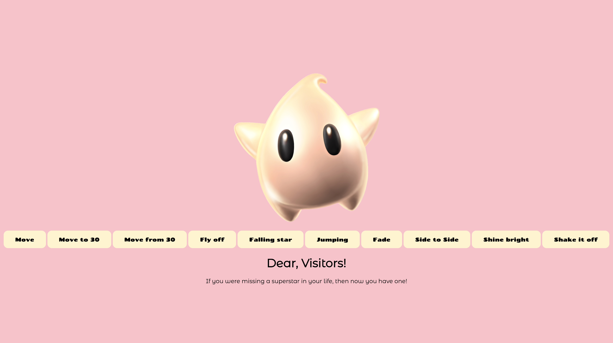

Theme 03: Basic Animation
03.01.02. Link to simple animation
linkDuring the third theme we started out learning animation through the use of CSS and also JavaScript. The first assignment was to choose a sprite and then give it simple animations to perform, e.g. jumping up-down & shaking side to side.

This exercise was very beneficial since it taught me that the use of CSS and JavaScript is very flexible and can result in interesting outcomes, although with a difficult learning curve.